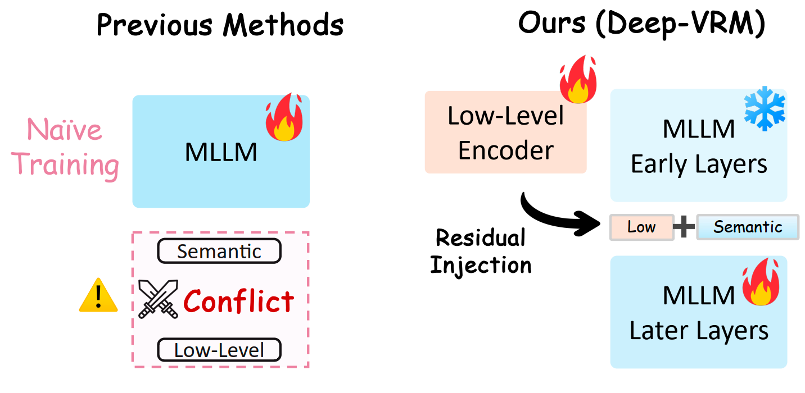
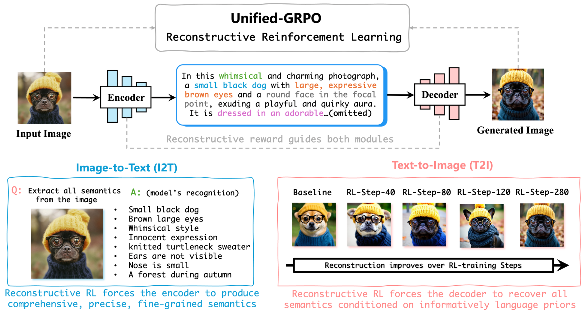
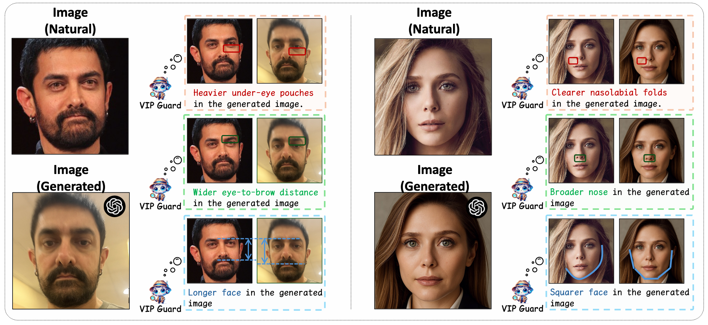
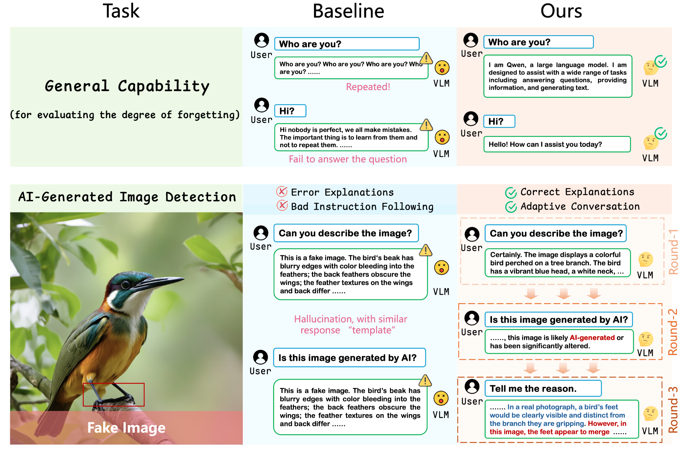
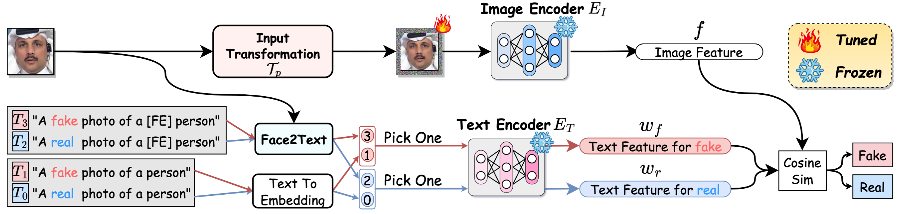
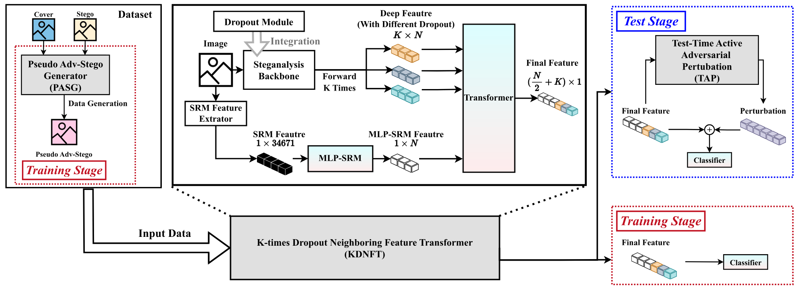

PhD Candidate · Shenzhen University
Kaiqing Lin 林凯清
I am a Ph.D. candidate at Shenzhen University, advised by Prof. Bin Li. I am currently a visiting student in the Multimedia Forensics Lab led by Prof. Luisa Verdoliva at the University of Naples Federico II, Italy.
My research focuses on multimedia forensics, information hiding, and unified multimodal models, including generative multimodal models and multimodal large language models. I am interested in understanding how multimodal models generate, reason about, and analyze visual content, while focusing on developing reliable methods for distinguishing real and synthetic media.
I expect to graduate in 2027 and am interested in research opportunities in both academia and industry.
- 232Citations
- 8h-index
- 5i10-index
Metrics via Google Scholar · last updated June 2026
News
- 2026 🎉 Deep-VRM was accepted to ICML 2026.
- 2026 🎉 Unified Multimodal Models as Auto-Encoders and SafeGuard-VL were accepted to CVPR 2026.
- 2025 🎉 VIPGuard and OMAT were accepted to NeurIPS 2025.
- 2025 🎉 RepDFD was accepted to AAAI 2025.
- 2025 🎉 DITL2 was accepted to ACM Multimedia 2025.
- 2024 📄 KDNFT was published in IEEE TIFS.
Publications
Full list on Google Scholar →Primary Publications
-
Deep Residual Injection for Full-Spectrum Forensic Signal Perception in Multimodal Large Language Models
★ First author
ICML 2026 (International Conference on Machine Learning) · accepted, to appear

-
Unified Multimodal Models as Auto-Encoders
★ Co-first author
CVPR 2026 (IEEE/CVF Conference on Computer Vision and Pattern Recognition)

-
Guard Me If You Know Me: Protecting Specific Face-Identity from Deepfakes
★ First author
NeurIPS 2025 (Advances in Neural Information Processing Systems 38)

-
Seeing Before Reasoning: A Unified Framework for Generalizable and Explainable Fake Image Detection
★ First author
arXiv:2509.25502, 2025

-
Standing on the Shoulders of Giants: Reprogramming Visual-Language Model for General Deepfake Detection
★ First author
AAAI 2025, 39(5), 5262–5270 (AAAI Conference on Artificial Intelligence)

-
Constructing an Intrinsically Robust Steganalyzer via Learning Neighboring Feature Relationships and Self-Adversarial Adjustment
★ First author
IEEE Transactions on Information Forensics and Security 19, 9390–9405, 2024

Other Publications
- GPT-ImgEval: A Comprehensive Benchmark for Diagnosing GPT-4o in Image Generation arXiv:2504.02782, 2025
- MoleCode Unlocks Structural Intelligence in Large Language Models arXiv:2605.16480, 2026
- Breaking Latent Prior Bias in Detectors for Generalizable AIGC Image Detection NeurIPS 2025 (Advances in Neural Information Processing Systems 38)
- MPF-Net: Exposing High-Fidelity AI-Generated Video Forgeries via Hierarchical Manifold Deviation and Micro-Temporal Fluctuations arXiv:2601.21408, 2026
- Towards Policy-Adaptive Image Guardrail: Benchmark and Method CVPR 2026 (IEEE/CVF Conference on Computer Vision and Pattern Recognition)
- Taming the Forensic Singularity: A Regularized Hyperbolic Framework for Generalizable AI-Generated Image Detection Manuscript, 2026 · in submission
- FakeVLM-R1: Internalizing Physical Laws via CoT for Synthetic Image Detection arXiv:2605.30062, 2026
- Diffusion-Guided Adversarial Perturbation Injection for Generalizable Defense Against Facial Manipulations arXiv:2604.01635, 2026
- AgentFox: LLM Agent-Guided Fusion with Explainability for AI-Generated Image Detection arXiv:2603.23115, 2026
- MIRROR: Manifold Ideal Reference ReconstructOR for Generalizable AI-Generated Image Detection arXiv:2602.02222, 2026
- Simplicity Prevails: The Emergence of Generalizable AIGI Detection in Visual Foundation Models arXiv:2602.01738, 2026
- An Efficient Watermarking Method for Latent Diffusion Models via Low-Rank Adaptation and Dynamic Loss Weighting Expert Systems with Applications, 2026
- Texture-Adaptive Cost Modeling via Residual Frequency Quantization and Predictive Order Awareness for WebP Steganography IEEE Transactions on Circuits and Systems for Video Technology, 2026
- Task-Model Alignment: A Simple Path to Generalizable AI-Generated Image Detection arXiv:2512.06746, 2025
- DITL2: Dual-Stage Invariance Transfer Learning for Generalizable Document Image Tampering Localization ACM Multimedia 2025, 82–91 (33rd ACM International Conference on Multimedia)
- Brought a Gun to a Knife Fight: Modern VFM Baselines Outgun Specialized Detectors on In-the-Wild AI Image Detection arXiv:2509.12995, 2025
- Spatial-Frequency Feature Fusion Network for Lightweight and Arbitrary-Sized JPEG Steganalysis IEEE Signal Processing Letters 31, 2585–2589, 2024
Experience
- 2024–2026 Research Intern · Tencent YouTu Lab — Facial Security Department, Shanghai. Designed high-performance deepfake-detection models for real-world deployment, and explored practical applications of multimedia forensics in real-world security scenarios.
- 2024–2025 Shenzhen University Special Graduate Student Fund — awarded CNY 50,000 in competitive research funding.
Awards
- 2025 National Scholarship for Ph.D. students, China.
- 2023 First Prize, Image Track — 2023 National Information Hiding and Detection Competition. Built a detector that generalizes across multiple steganography algorithms.
- 2023 Fourth Place, ICDAR 2023 DTT Text Manipulation Detection (Alibaba Security). Built a high-performance detector to localize manipulated regions in screenshots and photos.
- 2022 Second Prize, 2022 China Graduate Student Cybersecurity Innovation Competition. Designed a steganography algorithm robust to resizing and JPEG compression.
Contact
I'm happy to talk about research, collaborations, or opportunities. The best way to reach me is email.